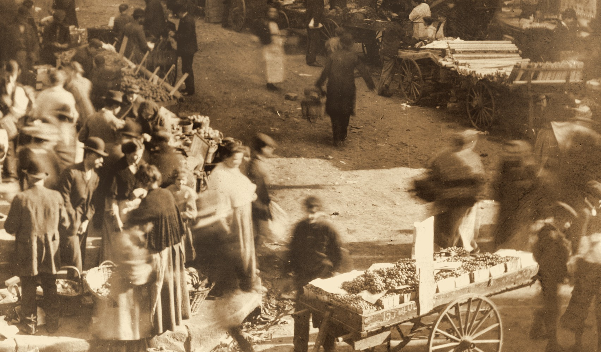
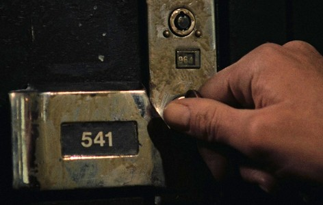

Lunch room & delicatessen
Lower East Side
Bill of fare, 1933

FAT MOE’S
HOT
LUNCH
LUNCH
OPEN
LATE
LATE
The old neighborhood, Sunday morning. We grew up on this corner.
No.
22
22
WATCH CLAIM CHECK
One gent’s gold pocket watch
Wound, set and oiled.
Not yet called for.
Not yet called for.

Locker 541. The key? Ask the clock.
Made fresh every morning
AT THE COUNTER
Delancey knishes.10
Potato and sweet onion in puff pastry, hot mustard.
Bagel crisps & schmear.20
Bagel rounds, chive cream cheese, smoked salmon.
Hot plates, noon to closing
FROM THE KITCHEN
Moe’s brisket.45
Slow braised on onions, paprika and tomato gravy.
Noodles’ kugel.15
Baked egg noodles, farmer cheese, raisins, cinnamon.
Friends of the house
BACK ROOM
Rye sour.35
Rye, lemon, sugar, egg white, a dash of bitters.
Cold tea.25
Strong, brown, from the pot. Ask for it by name.
Egg cream.05
Chocolate, milk, seltzer. No egg.
Everything in china teacups. Repeal is coming; we’ll give it a funeral.
ONE ONLY
Charlotte
russe
russe
Deliver upstairs
From the bakery case, one only
Charlotte russe5¢
Sponge in a paper cup, vanilla cream piped tall, a cherry.
Try not to eat it on the stairs.
Try not to eat it on the stairs.
Prices subject to change. Storeroom closed afternoons for dance practice.
Music most nights, Cockeye on the flute. Some of us go to bed early.
Bill of fare No. 1933. Telephone ORchard 4-1968. Same table as always.
Music most nights, Cockeye on the flute. Some of us go to bed early.
Bill of fare No. 1933. Telephone ORchard 4-1968. Same table as always.
Your table is waiting, boys.
Moe